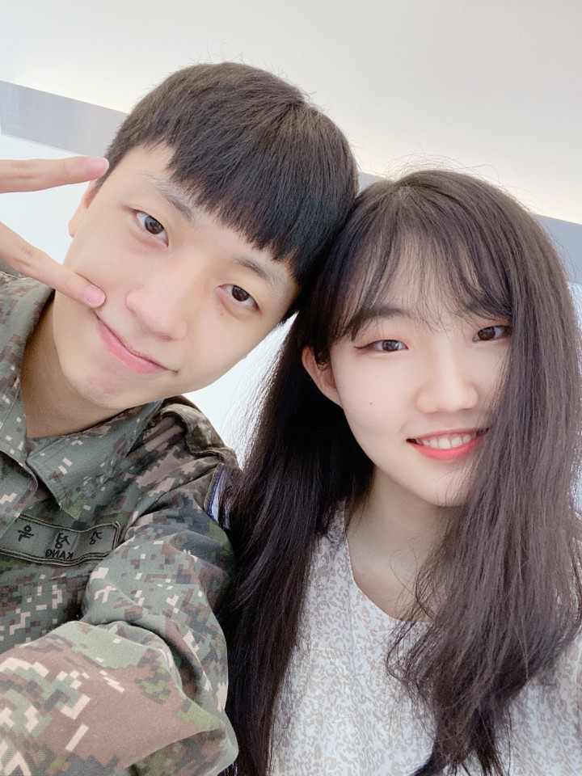

목차
- 숙소로의 여정
- 충성! 전역&800일기념촬영
- 800일 늦은 점심은 돈까쓰
- 앗뜨뜨 부상투혼! 화상의 소시지케챱볶음!
Hypertext Markup Language (HTML)
1. 숙소로의 여정
아침에 일어나보니 시간은 벌써 11시..
숙소를 나와보니 시간은 벌써 1시..
그들은 과연 숙소에 도착할수있을까..
2. 충성! 전역&800일기념촬영
군복을 입고 찍어보는 800일날 사진~! 잘나왔다~~

3. 800일 늦은 점심은 돈까쓰
완전완전 늦은 점심.. 이게 저녁이냐 점심이냐아
나는 고구마치즈돈가쓰!
예슬이는 치즈돈가쓰!
4. 앗뜨뜨 부상투혼! 화상의 소시지케챱볶음!
바보같이 소시지튀김을 실시한 성욱이.. 결국 화상을 입고 마는데..
| 아침 |
사라짐 |
| 점심 |
숙소로의 여정 |
| 저녁 |
기념촬영과 돈까쓰 |
| 새벽 |
부상투혼 소시지케챱볶음 |